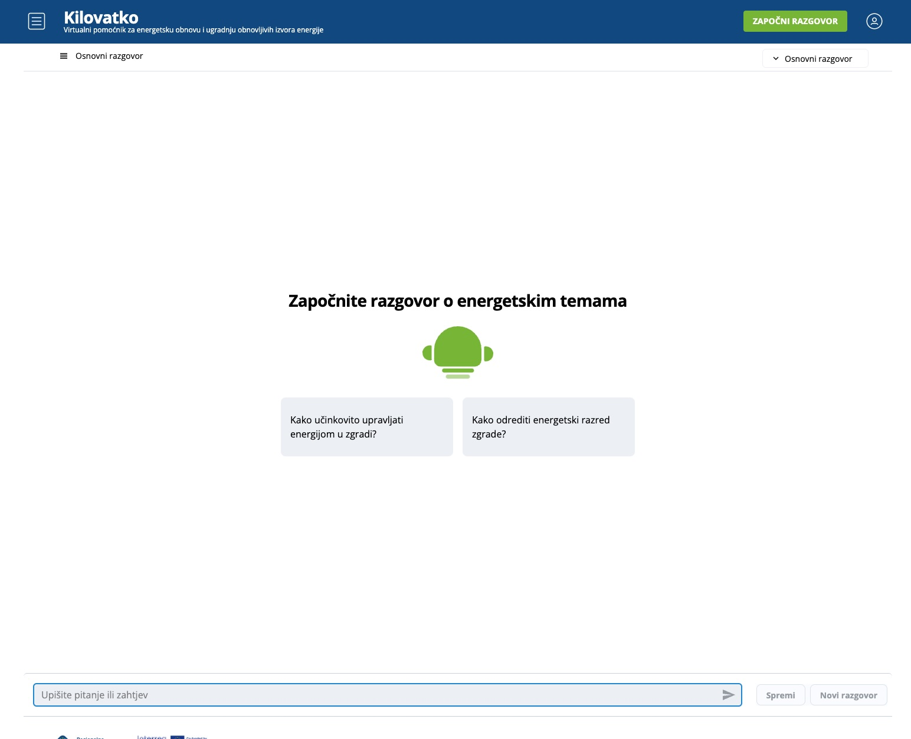
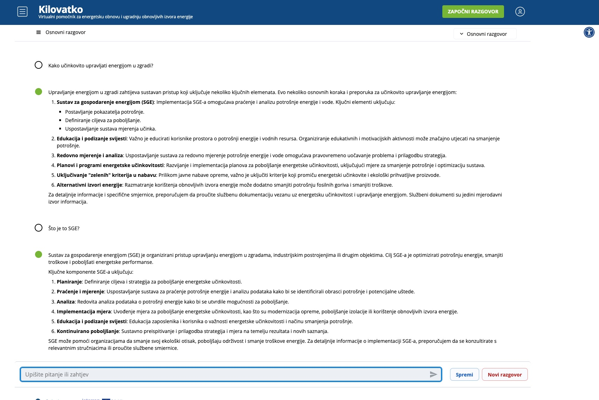
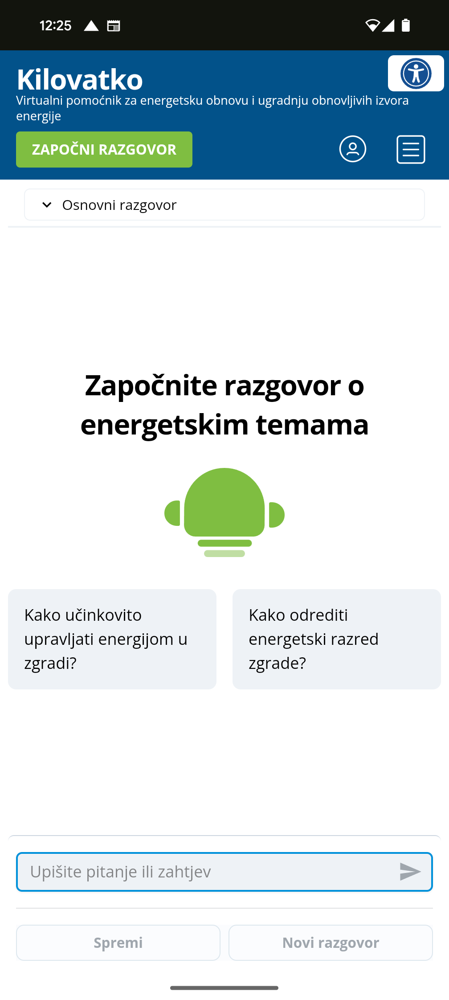
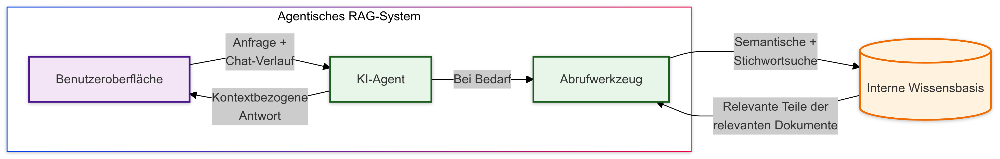
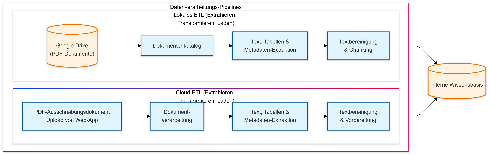

×

BERUFLICHE PROJEKTE
-
2024 - Webbasierte Plattform/KI-gestützter
Energie-Assistent
Überblick: Entwicklung einer umfassenden web-basierten Plattform, die intelligente Unterstützung für energieeffiziente Sanierung und Beratung im Bereich erneuerbarer Energien bietet. Das System kombiniert eine moderne Webanwendung mit fortschrittlicher KI-Technologie und ausgereiften Datenverarbeitungsfunktionen.
-
Hauptkomponenten:
- Moderne Webanwendung mit responsivem Design und intuitiver Benutzeroberfläche
- Fortschrittliches KI-Beratungssystem mit LangGraph/LangChain für intelligente Konversationen
- Ausgereifte ETL-Pipelines zur Verarbeitung von Dokumentationen und Förderprogrammen
- Cloud-native Architektur auf Basis der Google Cloud Platform
-
Technische Highlights:
- Frontend: React mit Joy UI-Komponenten
- Backend: FastAPI mit Firebase/Firestore-Integration
- KI-Infrastruktur: Maßgeschneiderter LangGraph-Workflow mit Vektordatenbank (Weaviate)
- Datenverarbeitung: Spezialisierte ETL-Pipelines mit Unstructured.io, Prefect und GCP Workflows
- Technologie-Stack: Google Cloud Platform (Cloud Run, Cloud Storage, Secret Manager, Cloud Workflows, Cloud Functions, Pub/Sub, EventArc), Firebase, Firestore, Python/FastAPI, React/Joy UI, LangChain-Ökosystem, Weaviate, Unstructured.io, Integration von OpenAI/Anthropic/Google LLM-Modellen
- Plattform-Übersicht | Mobile Version
Web-Anwendung Screenshots:
  System-Architektur Flussdiagramme:
  -
Hauptkomponenten:
PERSÖNLICHE PROJEKTE
Projekte
- 2024 - Chatbot RAG Demo ist ein fastAPI-Backend, das für eine webbasierte Chat-Anwendung entwickelt wurde, die interaktive und intelligente Chat-Erlebnisse im Streaming-Modus bietet. Es nutzt Technologien wie Firebase Authentication, Firestore, Websockets, Große Sprachmodelle (LLMs)/ChatGPT und RAG mit LLamaIndex. Der Chatbot bindet Benutzer in Diskussionen über einen von KI generierten Sci-Fi-Roman mit dem Titel "Beyond Boundaries: A Journey Through Future's Veil" ein, der mögliche LLamaIndex. Der Chatbot bindet Benutzer in Diskussionen über einen von KI generierten Sci-Fi-Roman mit dem Titel "Beyond Boundaries: A Journey Through Future's Veil" ein, der mögliche Zukünfte erkundet. Probieren Sie die Demo auf meiner Unternehmensseite Website aus.
- 2023-2024 - Lernassistenten-App "Study Buddy" verwendet Flutter und Flask/Python, um eine interaktive und pädagogische Anwendung für Kinder zu erstellen, die sowohl auf mobilen als auch auf Webplattformen zugänglich ist. Die App verfügt über fortgeschrittene KI-Fähigkeiten durch die Integration der OpenAI-API, die interaktive Q&A-Sitzungen ermöglicht. OpenAI-API, die interaktive Q&A-Sitzungen ermöglicht.
- Funktionalität: Verfügt über fortgeschrittene KI-Funktionen durch die Integration der OpenAI-API für interaktive Q&A-Sitzungen. Features umfassen ein benutzerfreundliches Design, mehrsprachige Unterstützung und verschiedene Benutzerrollen (Administrator, Abonnent, Gast).
- Technische Highlights: Backend mit Flask/Python erstellt, integriert mit Firebase, Google Vision und GCP Storage. Frontend in Flutter entwickelt, um ein nahtloses Cross-Plattform-Erlebnis zu gewährleisten.
- Schlüsselmerkmale: Interaktive Lernwerkzeuge, effiziente App-Navigation, Echtzeit-Lernunterstützung und eine sichere, modulare Backend-Struktur für eine effiziente Datenverarbeitung und -speicherung.
- Technologie-Stack: Einsatz von Technologien wie Google Cloud Platform, Firebase Authentication, Firestore, OpenAI API und ChromaDB, der eine vielfältige und leistungsstarke Reihe von Fähigkeiten in der App-Entwicklung zeigt.
- Mehr Details
- 2024 - Maschinelles Lernhandbuch basierend auf Kaggle's Titanic-Datensatz. Bietet eine strukturierte Methodik für ML-Herausforderungen, verbessert die Vorhersagegenauigkeit und liefert Einblicke in die Überlebensdaten der Titanic. Ideal für diejenigen, die ihre Datenwissenschaftsfähigkeiten durch praktische Anwendung verbessern möchten. Mehr Details
- 2023 - Flutter-Anwendung mit Schnittstelle zu OpenAI-API-Modellen, einschließlich GPT Chat, Whisper und Dall-E, Auswahl von Betriebsmodi, Modellen usw. Mehr Details
- 2019 - Roboterarm-Managementsystems unter Verwendung von Raspberry PI, einschließlich einer Python-basierten GUI für die Steuerung. Mehr Details
- 2020 - 2021 - Heimautomatisierung: Nutzung des ComfortClick-Servers und einer mobilen Anwendung für integrierte Sicherheit (DSC) und adaptive Heizungslösungen über KNX (Aktoren) und RS485/Modbus (Sensoren)
- 2020 - Raspberry PI-basiertes Webserver zur Datenerfassung und -visualisierung von Umweltparametern (Temperatur, Feuchtigkeit und PM2.5- und PM10-Partikel).
- 2023 - Persönliche Seite Mehr Details
- 2024 - Unternehmensseite Mehr Details